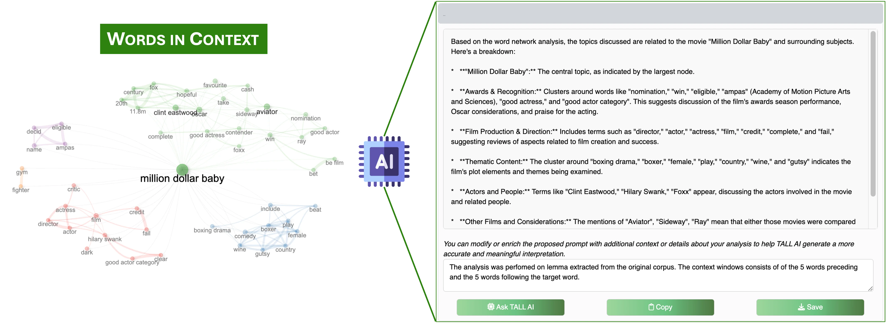
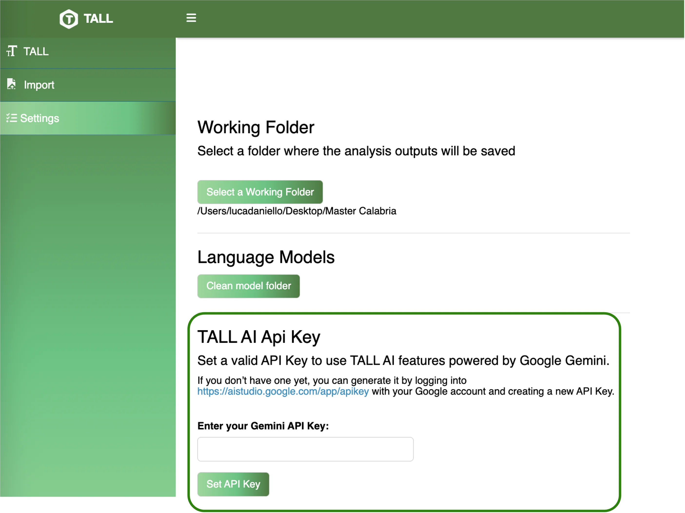

A context‑aware assistant — built on the Google Gemini API — that generates contextualised explanations for every analytical step in TALL. It interprets topic clusters, reads sentiment distributions, suggests next analyses, and comments on network communities in natural language, right alongside the numerical output.
Integrated with Google Gemini · Medium (16k tokens) or Large (32k tokens) modes
TALL AI does not replace statistical analysis — it narrates it. Each output comes with a collapsible panel of AI‑generated commentary providing interpretive context, suggesting next analytical steps, and highlighting implications a domain expert would notice.
Generates narrative summaries of every output — frequency tables, topic models, network clusters, sentiment distributions — grounded in the specific characteristics of your dataset.
Suggests the most suitable next analysis for your corpus — from Words in Context to Polarity Detection — turning the platform into a research companion.
At the end of the pipeline, assembles "Key Takeaways & Implications" — the kind of narrative distillation that bridges statistical evidence and actionable insight.
TALL AI's responses appear in collapsible panels directly next to each analytical output. In the BBC News example, the assistant interpreted five community‑detection sub‑graphs as topical clusters — Awards/Movies, Music and Performance, Music Industry, Media and Entertainment, General News — and surfaced observations such as "the entertainment news focuses heavily on film awards and the movie industry."
For the US Airline Tweets corpus, TALL AI synthesised the sentiment analysis into actionable takeaways: "the dominance of 'delay' and 'cancel' in negative tweets suggests airlines should focus on improving their processes for handling flight disruptions."
The model's textual responses are rendered dynamically within the interface, complementing quantitative results with natural‑language commentary.

TALL AI implements strict data minimisation. Only metadata and aggregated statistical results are transmitted to the Gemini API for interpretation — raw textual content stays in your R session.
Only metadata and aggregated statistics are transmitted. The Gemini API receives summaries — counts, topic labels, cluster structures — never the underlying documents.
The AI assistant can be disabled entirely in the settings — all other functionality remains fully operational. No external calls, no connectivity required.
For regulated data (GDPR, HIPAA), TALL can be deployed on private servers with restricted API access — or without external connectivity at all.
For research involving EU‑GDPR or US‑HIPAA regulated data, we recommend one of: (1) disabling TALL AI; (2) isolated server deployment; or (3) data anonymisation prior to analysis. Future versions will support local language models for additional privacy guarantees.

Choose between Medium (16,384 tokens) and Large (32,768 tokens) configurations, plus alternative Gemini variants via a drop‑down menu. Default prompts are pre‑configured but fully customisable to match your analytical goals and preferred narrative detail.
gemini-3.5-flash-lite since 1.0.1